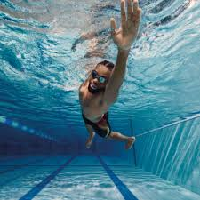

- Football:Football, often called soccer in some countries, is a team sport played between two teams of eleven players with a spherical ball. Known as the world's most popular sport, it involves a combination of skills such as dribbling, passing, and shooting to score goals against the opposing team. Football is celebrated for its ability to bring people together, fostering a sense of community and teamwork. or more info 
- Swimming:Swimming is an activity that involves moving through water using one's body. It can be both a recreational activity and a competitive sport. As a form of exercise, swimming works nearly every muscle group in the body without putting stress on joints, making it a suitable workout for people of all ages. It enhances cardiovascular fitness, improves flexibility, and can be a relaxing and therapeutic way to unwind. or more info
- Coding: Coding, also known as programming, is the process of designing and building an executable computer program to accomplish a specific computing result. It involves tasks such as analysis, generating algorithms, profiling algorithms' accuracy, and resource consumption, and the implementation of algorithms in a chosen programming language (commonly referred to as coding). Coding is not only essential for developing software applications but is also crucial in solving problems in various domains and automating tasks. or more info

Guess my favorite hobby: